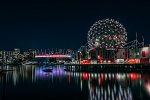
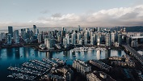

Vancouver, a bustling west coast seaport in British Columbia, is among Canada’s densest,
most ethnically diverse cities. A popular filming location, it’s surrounded by mountains,
and also has thriving art, theatre and music scenes.
Vancouver Art Gallery is known for its works by regional artists,
while the Museum of Anthropology houses preeminent First Nations collections.


Go Back!